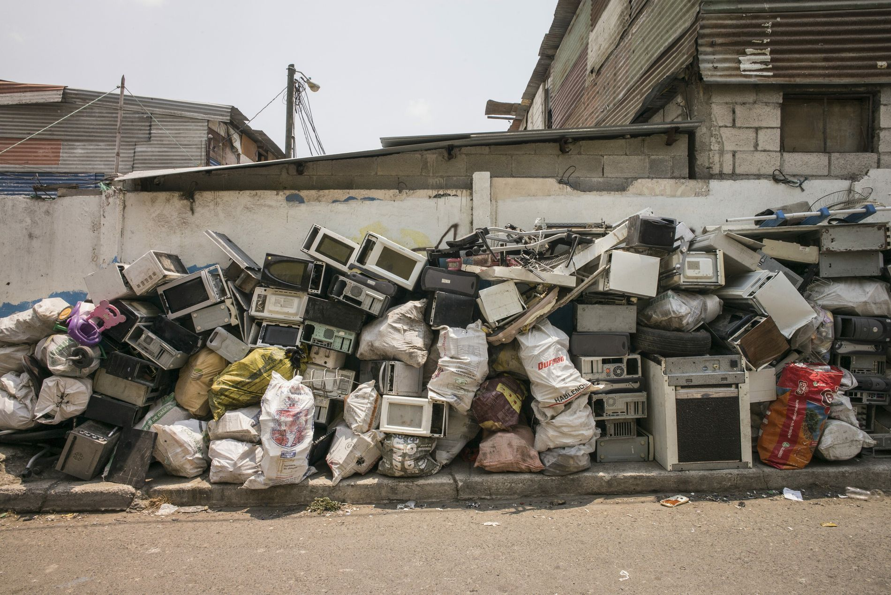
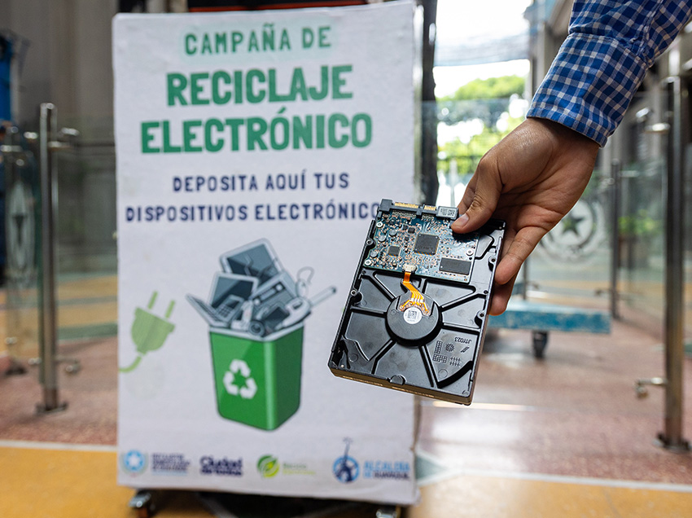

- Protección Ambiental: Reduce la cantidad de desechos tóxicos que terminan en vertederos, evitando la contaminación del suelo y el agua.
- Recuperación de Recursos: Permite extraer materiales valiosos como oro, plata, cobre y paladio, disminuyendo la necesidad de minería y conservando recursos naturales.
- Reducción de Emisiones: Disminuye la energía necesaria para producir nuevos productos a partir de materias primas vírgenes.
- Prevención de Riesgos para la Salud: Evita la exposición a sustancias peligrosas presentes en los dispositivos electrónicos.
El impacto de la tecnología en nuestro planeta
Descubre cómo el reciclaje digital puede transformar los residuos electrónicos en una oportunidad para un futuro más verde.
Aprende Más¿Qué es el Reciclaje Digital?
El RECICLAJE DIGITAL, también conocido como reciclaje de residuos electrónicos o e-waste, es el proceso de recuperar y reutilizar los componentes de dispositivos electrónicos que han llegado al final de su vida útil. Esto incluye desde teléfonos móviles y ordenadores hasta televisores y electrodomésticos.
Mira este video para entender mejor el proceso de reciclaje de residuos electrónicos.
¿Por Qué es Crucial el Reciclaje Digital?

El e-waste es un problema global que requiere nuestra atención.
¿Cómo Puedes Contribuir al Reciclaje Digital?
Reciclar tus dispositivos electrónicos es más fácil de lo que piensas. Aquí te damos algunos pasos clave:
- No lo tires a la basura común: Los residuos electrónicos deben ser tratados de forma especial.
- Busca puntos de recolección: Muchas ciudades tienen centros de acopio o eventos especiales para e-waste.
- Empresas especializadas: Investiga si hay empresas en tu área que se dedican al reciclaje de electrónicos.
- Programas de devolución: Algunos fabricantes ofrecen programas para reciclar sus propios productos.
- Reutiliza o Dona: Si el dispositivo aún funciona, considera donarlo o venderlo para extender su vida útil.
Aprende cómo preparar tus dispositivos para el reciclaje de forma segura.

Encuentra un punto de reciclaje cercano a ti.
Contáctanos y Aprende Más
¿Tienes preguntas o quieres saber más sobre el reciclaje digital en tu comunidad? ¡Estamos aquí para ayudarte!